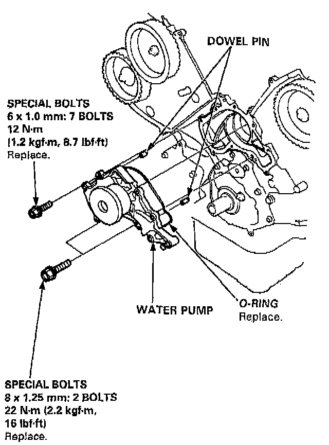

Water Pump Replacement

REPLACEMENT
1. Remove the timing belt.
2. Unscrew the bolts, then remove the water pump.
NOTE: Inspect and clean the O-ring groove and mating surface with the cylinder block.
3. Install the water pump in the reverse order of removal.
NOTE:
^ Keep the O-ring in position when installing.
^ Clean up spilled engine coolant.